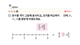

전체목차
(전체목차 펼침영역)
[12342343~4차시] 느낌을 살려 사물 표현하기 느낌을 살려 사물 표현하기 [3~4차시] 느낌을 살려 사물 표현하기 [3~4차시] 느낌을 살려 사물 표현하기
국어 110~120쪽
국어 활동 110~112쪽
진도 저장
도움말
학습목차
닫기
단원도입
단원 열기
단원 학습 목표
내 등록 자료
도입
생각 열기
이번 시간에 배울 내용
내 등록 자료
전개
1. 봄이 오는 소리를 어떻게 표현 했는 봄이 오는 소리를 어떻게 표현 했는
국어활동
내 단원 학습 목표
탐구해요
이번 시간은 대화에서 알맞은 높임 표현 고르고 물음에 답해보기
PDF

이야기에서 인상 깊은 장면 정리하기
정리
비주얼씽킹으로 핵심 정리
대화에서 알맞은 높임 표현 고르고 물음에 답해보기 2
다음 시간에 배울 내용
그룹 1입니다.
그룹 2입니다.
다음 시간에 배울 내용
그룹 1입니다.
그룹 2입니다.
교과서
국어활동
등록된 자료표시.pdf
바로가기